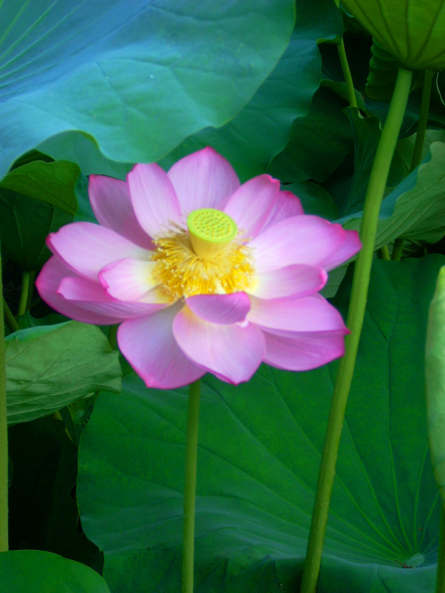

上野恩寵公園・不忍池 四季→夏 エリア→東京東部

このスポットには
不忍池の蓮は、江戸時代より浮世絵に描かれたほどの名所です。戦時中は池を埋め立てて水田となりましたが、戦後、復旧作業が始まり昭和30年代頃に池として復活しました。毎年7月中旬頃から開花が始まり、夏の風物詩として親しまれています。花が咲く午前中には見物客が数多く訪れてカメラに蓮の花を収める姿も多く見られます。（https://t-navi.city.taito.lg.jp/spot/tabid90.html?pdid1=115 より抜粋）
このスポットには
こんな歴史が・・・
徳川期において文人たちがこよなく愛した地。天海が琵琶湖に見立てて中島を築き弁天堂を造営。境内が公開されると上野の山は花見の名所として不忍池は蓮の名所として賑わった。
所在地
東京都台東区上野公園5-20
最寄り駅
東京メトロ千代田線湯島駅、京成電鉄京成上野駅